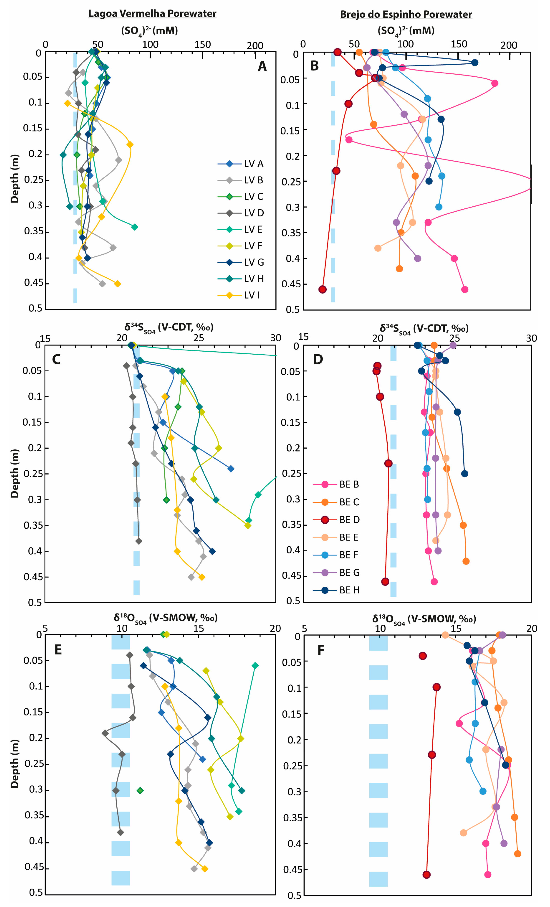

The Relationship between Bacterial Sulfur Cycling and Ca/Mg Carbonate Precipitation- Old Tales and New Insights from Lagoa Vermelha and Brejo do Espinho

Resumo em Português
Nas últimas décadas, o conceito de ciclagem microbiana do enxofre catalisando a precipitação de CaMg(CO₃)₂ em baixas temperaturas (<40 °C) tem sido estudado intensamente. Nesse contexto, duas lagoas hipersalinas — Lagoa Vermelha e Brejo do Espinho, no Brasil — têm sido objeto de numerosos estudos investigando a formação sedimentar de carbonatos de Ca/Mg. Apresentamos as composições isotópicas de enxofre e oxigênio do sulfato dissolvido na água superficial, bem como do sulfato e sulfeto da água intersticial (δ³⁴SSO₄, δ¹⁸OSO₄ e δ³⁴SH₂S), a composição isotópica de enxofre da pirita sedimentar (δ³⁴SCRS) e as composições isotópicas de enxofre e oxigênio do sulfato associado a carbonato (CAS, δ³⁴SCAS e δ¹⁸OCAS).Os perfis de água intersticial na Lagoa Vermelha indicam redução bacteriana de sulfato em andamento, evidenciada pelo aumento dos valores de δ³⁴SSO₄, δ¹⁸OSO₄ e δ³⁴SCRS em profundidade. No Brejo do Espinho, os perfis de água intersticial não exibiram tendências isotópicas dependentes da profundidade; a razão Ca/Mg foi, em média, mais baixa, e os valores de δ¹⁸OSO₄ tanto na água superficial quanto na intersticial foram fortemente enriquecidos em ¹⁸O. Uma correlação negativa foi observada entre a razão Ca/Mg e valores mais elevados de δ³⁴SCAS. Os resultados mostram que a diferença de tamanho entre as duas lagoas induz diferenças na intensidade de evaporação, levando ao aumento da secreção de substâncias extrapoliméricas (EPSs) por microrganismos no menor Brejo do Espinho. As EPSs fornecem o microambiente onde os carbonatos de Ca/Mg podem nuclear e preservar valores elevados de δ³⁴SCAS. Além das EPSs, o aumento da oxidação do enxofre é proposto como um segundo fator causador do enriquecimento relativo de carbonatos de Ca/Mg no Brejo do Espinho. Os resultados enfatizam o papel dos processos evaporativos na formação de carbonatos de Ca/Mg e indicam que os valores de δ³⁴SCAS refletem microambientes, em vez de preservar uma assinatura marinha aberta de δ³⁴SSO₄.